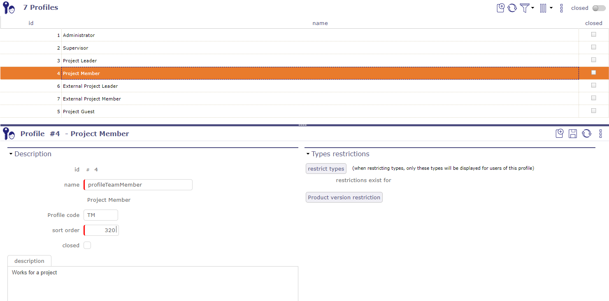
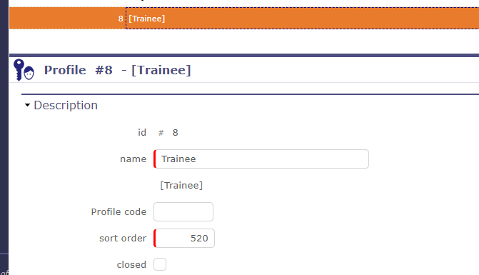
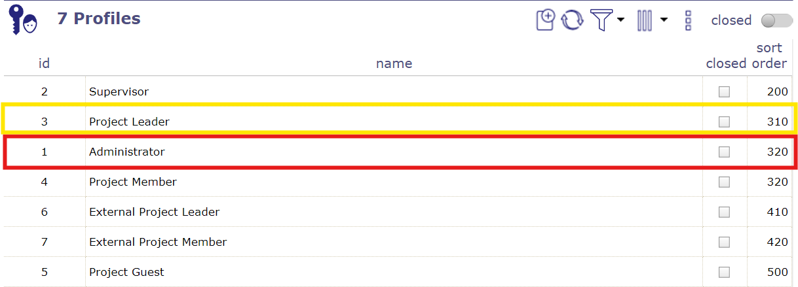
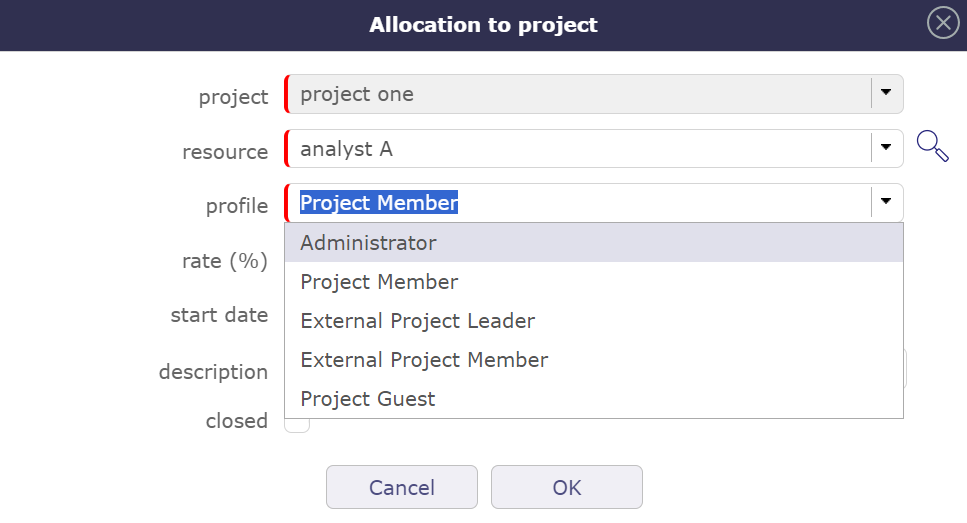
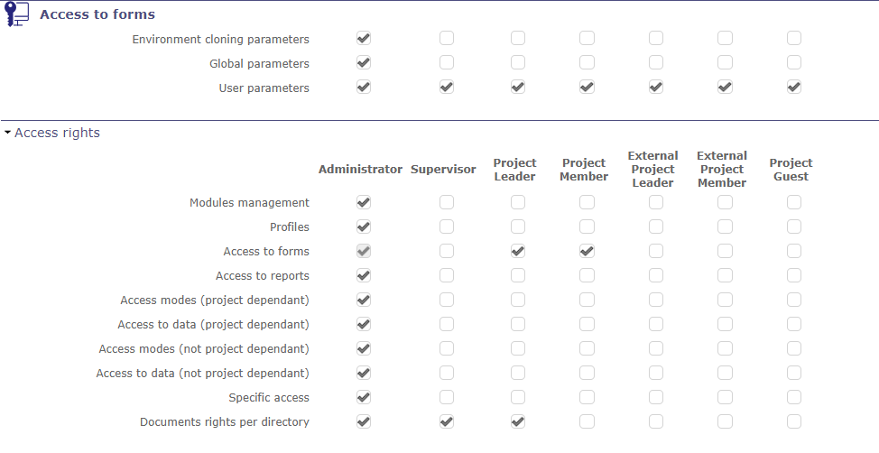
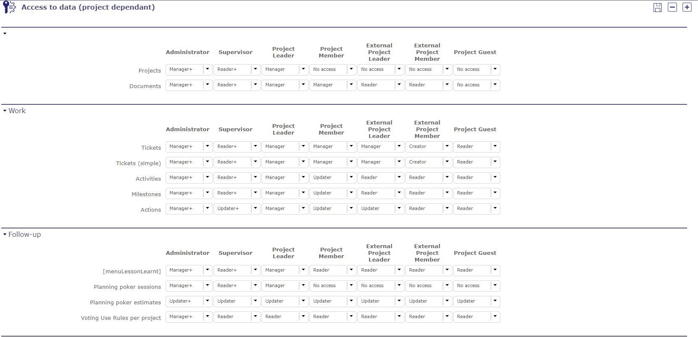
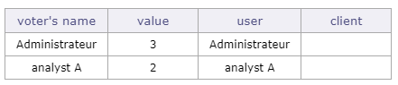
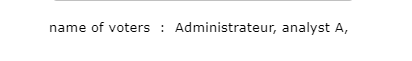
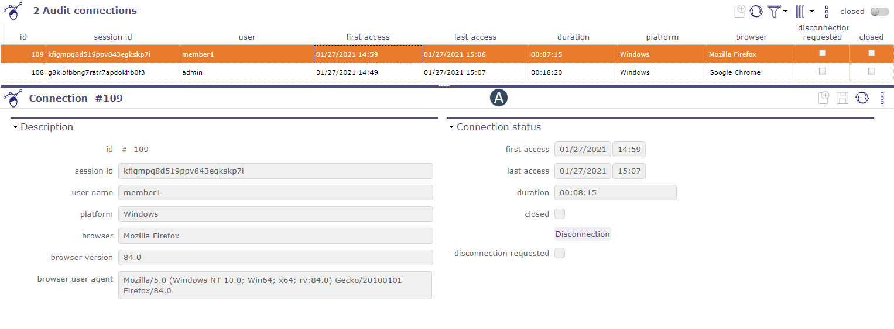

Gestion de la configuration¶
Gestion des modules¶
La gestion des modules permet de choisir le(s) module(s) qui apparaîtront dans l’interface. Chaque module peut être activé/désactivé individuellement.
Ceci active ou désactive un groupe cohérent de fonctionnalités.

Écran de gestion des modules¶
Le menu en haut de la page vous permet d’afficher tous les modules ou d’afficher les modules correspondant à une partie du périmètre de la gestion de projet.
Lorsque vous avez sélectionné l’un de ces menus, les modules sont affichés ci-dessous.
Cliquez sur un module pour afficher sa description, ainsi que la liste des écrans qui seront activés ou désactivés.
Cliquez sur les cases à cocher pour activer ou désactiver le module.
Avertissement
La désactivation de certains modules masquera également les rapports, tous les paramètres associés et certains champs.
Par exemple, les champs de dépenses de projet et d’activité sont masqués lorsque le module financier/dépenses est désactivé.
Droits d’accès¶
Profils¶
Le profil est un groupe de droits. Chacun avec des droits d’accès spécifiques à la base de données.
Ainsi, chaque utilisateur est lié à un profil qui définit les données qu’il peut voir et éventuellement gérer.
Voir aussi

Écran des profils¶
Valeur du champ « Nom »
La valeur du champ « Nom » n’est pas le nom affiché, mais c’est un code dans la table de traduction.
La valeur du champ « Nom » doit être un nom significatif et ne doit pas contenir d’espaces ou de caractères spéciaux.
Le nom affiché à droite du champ est le nom traduit.
lorsque le nouveau profil est créé, il apparaît dans la liste des profils existants dans la liste déroulante.
Il reste entre crochets car il n’existe pas dans Nom traduisible.
Astuce
Idéalement, la valeur du champ devrait commencer par « profile » pour être facilement identifié dans la table de traduction.

Description du profil avec nom traduisible¶
Champ Code de profil
Vous pouvez insérer les abréviations dont vous avez besoin et elles n’ont pas d’impact sur la plupart des profils.
Cependant, pour les administrateurs et les chefs de projet, vous devez respecter ces codes afin que l’application les reconnaisse.
ADM: désignera l’administrateur.
PL: désignera le chef de projet.
Ordre de tri
L’ordre de tri est important dans les profils car il permet de placer le profil le plus important en haut des listes déroulantes.
Lorsqu’un chef de projet assigne une ressource, il peut lui attribuer un profil, en partant de son propre profil et en descendant jusqu’au plus bas.

ordre de tri avec l’administrateur en dessous du chef de projet¶
Si le profil administrateur est, en raison de son ordre de tri, en dessous du chef de projet dans la liste, dans ce cas, le chef de projet pourrait attribuer le profil administrateur à n’importe quelle ressource sur le projet en question.

Le chef de projet peut assigner une ressource avec le profil administrateur¶
Zone de restriction
La zone de restriction offre deux types de restriction :
Par type basé sur les éléments ProjeQtOr (actions, activités, factures, catalogue…)
Par versions de produit
Voir aussi
Accès aux formulaires¶
Cet écran de paramètres vous permet de définir l’accès aux écrans d’éléments pour chaque profil.
Les utilisateurs qui ont accès à cet écran ne peuvent pas modifier leurs propres droits d’accès aux écrans.
La case à cocher est en lecture seule pour s’assurer qu’au moins un profil puisse toujours y accéder.
Seul un autre profil ayant accès à l’écran pourra décocher cette case.

Écran d’accès aux formulaires¶
Cliquez sur la case à cocher pour autoriser ou révoquer l’accès à un écran de profil.
Cliquez sur
 pour ouvrir toutes les sections
pour ouvrir toutes les sectionsCliquez sur
 pour fermer toutes les sections
pour fermer toutes les sections
Modes d’accès¶
Le mode d’accès définit une combinaison de droits pour Créer, Lire, Mettre à jour ou Supprimer des éléments.
Ce sont les DROITS CRUD :
Droits de création
Droits de lecture
Droits de mise à jour
Droits de suppression
Chaque accès est défini comme portée de visible et/ou modifiable, qui peut être, par type d’éléments.
Dépendant du projet¶
Par défaut, ProjeQtOr propose 10 modes d’accès différents.
Chaque accès définit la visibilité qui peut être appliquée par type d’éléments dépendant d’un projet (activité, ticket, action, …).
Vous pouvez choisir parmi plusieurs niveaux de visibilité pour chaque droit CRUD.
Aucun élément: Aucun élément n’est visible et modifiable.
Éléments propres: Uniquement les éléments créés par l’utilisateur.
Éléments dont il est responsable: Uniquement les éléments dont l’utilisateur est responsable.
Éléments de son propre projet: Uniquement les éléments des projets auxquels l’utilisateur/ressource est affecté.
Tous les éléments sur tous les projets: Tous les éléments, quel que soit le projet.
Valeur du champ « Nom »
La valeur du champ « Nom » n’est pas le nom affiché, mais c’est un code dans la table de traduction.
La valeur du champ « Nom » doit être un nom significatif et ne doit pas contenir d’espaces ou de caractères spéciaux.
Le nom affiché à droite du champ est le nom traduit.
lorsque le nouveau profil est créé, il apparaît dans la liste des profils existants dans la liste déroulante.
Il reste entre crochets car il n’existe pas dans nom traduisible.
Astuce
Idéalement, la valeur du champ devrait commencer par « accessProfile » pour être facilement identifiée dans la table de traduction.
Non dépendant du projet¶
Les éléments non dépendants d’un projet, tels que les organisations, les paramètres, les listes de valeurs, les outils ou même les contrôles et automatismes peuvent également être définis avec des droits CRUD.
Ces éléments doivent être visibles. Le droit de lecture est donc accordé de manière basique.
ProjeQtOr propose 5 modes d’accès différents où vous pouvez définir les droits de création, de mise à jour et de suppression.
Oui: autorise le droit de…
Non: n’autorise pas le droit de…
Éléments propres: Uniquement les éléments créés par l’utilisateur.
Éléments dont il est responsable: Uniquement les éléments dont l’utilisateur est responsable.
Vous pouvez ensuite définir un mode correspondant aux droits de visibilité que vous souhaitez accorder sur chaque profil dans l’accès aux données non dépendantes du projet.
Accès aux données¶
Cet écran permet de définir le mode d’accès aux éléments pour chaque profil.
Permet de définir la portée de visibilité et/ou de mise à jour des données dans les éléments pour les utilisateurs et les ressources.
Cliquez sur
pour ouvrir toutes les sectionsCliquez sur
pour fermer toutes les sections
Dépendant du projet¶
Cet écran concerne uniquement les éléments dépendant d’un projet.
Pour chaque élément, sélectionnez le mode d’accès accordé à un profil.

Écran d’accès aux données (Dépendant du projet)¶
Non dépendant du projet¶
Cet écran permet de définir pour chaque profil, les droits d’accès aux éléments.
Permet d’accorder des droits d’accès (lecture seule ou écriture) aux utilisateurs, aux données sur des éléments spécifiques.
Cet écran concerne uniquement les éléments non dépendants d’un projet.
Pour chaque élément, sélectionnez les droits d’accès accordés à un profil.
Certaines fonctionnalités n’ont pas de responsable ou ne sont pas liées spécifiquement à un profil d’utilisateur, comme les messages, les outils ou même les paramètres d’environnement.
Certains modes d’accès ne sont donc pas proposés dans les listes déroulantes sur certains éléments de cet écran.
Accès aux rapports¶
Cet écran permet de définir l’accès aux rapports pour chaque profil. Les utilisateurs appartenant à un profil peuvent voir le rapport correspondant dans la liste des rapports. Les rapports sont regroupés par catégories de rapports
Cliquez sur la case à cocher pour autoriser ou révoquer l’accès au rapport pour un profil.
Cliquez sur
pour ouvrir toutes les sectionsCliquez sur
pour fermer toutes les sections
Droits sur les documents par répertoire¶
Vous pouvez définir les droits d’accès aux documents selon le profil à chaque niveau de l’arborescence des répertoires de documents.
Par défaut, toutes les valeurs sont initialisées pour chaque répertoire existant à partir des valeurs existantes dans l’écran des droits « Accès aux données dépendant du projet ».
Accès spécifiques¶
Cet écran regroupe les options de fonctionnalités spécifiques. Les utilisateurs appartenant à un profil peuvent avoir accès aux fonctions spécifiques de l’application. Selon les options de fonctionnalité, permet d’accorder des droits d’accès, de définir la visibilité des données ou d’activer ou de désactiver une option.
Pour chaque option, sélectionnez l’accès accordé à un profil.
Accès aux données de ressource
Cette section permet de :
Définit qui pourra voir et mettre à jour le travail réel pour d’autres utilisateurs.
Définit qui peut valider le travail pour une ressource.
Définit qui a accès à l”agenda pour les ressources.
Définit qui, en tant que ressource, peut s’abonner à l’enquête pour les utilisateurs.
Définit qui a accès aux rapports pour les ressources.
Note
Valider le travail réel: dans la plupart des cas, il est dévolu au chef de projet.
Visibilité du travail et des coûts
Cette section définit pour chaque profil la portée de visibilité des données de travail et de coût sur le projet et l’activité par exemple.
Gestion des assignations
Cette section définit la visibilité et la possibilité de modifier les assignations (sur les activités ou autres).
Afficher les boutons spécifiques
Cette section définit si certains boutons, checklist, liste de tâches seront affichés ou non (si définis).
Affichage du bouton de détail combo
Cette option définit pour chaque profil si le bouton
 sera affiché ou non, en face de chaque liste déroulante combo.
sera affiché ou non, en face de chaque liste déroulante combo.Via ce bouton, il est possible de sélectionner un élément et de créer un nouvel élément.
Ce bouton peut également être masqué en fonction des droits d’accès (si l’utilisateur n’a pas d’accès en lecture aux éléments correspondants).
Accès à…
…La liste des tâches
…Checklist
…Liste des jobs
vous permet d’afficher les sections correspondantes sur les écrans d’éléments.
Modification en masse
Définit la possibilité ou non de modifier un ou plusieurs critères pour une ou plusieurs lignes sélectionnées à la fois
Affichage conditionnel
Cette section vous permet de visualiser le tableau de vote dans la section vote de l’onglet détails du ticket.
Tableaux de vote
Le tableau de vote doit afficher le nom réel des votants, le nombre de points attribués à l’élément sélectionné, leur nom d’utilisateur et le nom du client auquel appartient l’utilisateur.

Nom des votants
Si vous ne souhaitez pas voir ou afficher autant de détails, vous pouvez afficher uniquement les noms des personnes qui ont voté sur cet élément.

Droits d’accès à la planification
Cette section définit l’accès pour chaque profil aux fonctionnalités de planification.
Calculer la planification
Définit si un profil a le droit de recalculer le calendrier en utilisant l’outil de calcul.
Peut planifier avec surutilisation de ressource
Définit si un profil peut cocher la case Calculer avec surutilisation dans l’outil de calcul de la vue de planification.
Accès à la planification de ressources d’autres personnes
Définit quel profil a le droit de visualiser les informations de planification d’autres ressources.
Modifier la date validée
Les informations validées peuvent être des données sensibles ; vous décidez si un profil peut modifier ces champs.
Modifier la priorité du projet
Modifier la priorité des autres éléments
La priorité peut avoir un impact significatif sur la planification des projets et de leurs éléments. C’est pourquoi ProjeQtOr vous permet de définir un profil spécifique pour modifier ces valeurs.
Modifier l’avancement manuel Si l’avancement manuel pour les activités à durée fixe est activé dans les paramètres globaux, vous pouvez définir si un profil a le droit de modifier ce champ dans les détails des éléments planifiables.
Valider la planification
Activer le calcul automatique
Activer le calcul automatique
Définit quel profil pourra utiliser le calcul automatique sur la vue de planification.
Consolidation mensuelle des projets
Cette section définit le droit pour chaque profil s’il peut valider et/ou bloquer les affectations des ressources d’un projet pour un mois défini.
Déverrouiller les éléments
Cette section définit pour chaque profil la capacité à déverrouiller n’importe quel document ou exigence.
Sinon, chaque utilisateur ne peut déverrouiller que les documents et exigences verrouillés par lui-même.
Rapports
Cette section définit pour chaque profil la capacité à modifier le paramètre ressource dans les rapports.
Financier
Cette section définit pour chaque profil la possibilité de modifier les situations financières ou de pouvoir générer automatiquement une dépense de projet.
Droits de mise à jour spécifiques
Vous déterminez pour chaque profil s’il a les droits d’exécuter ou de réaliser certaines fonctionnalités. La mention « tous » fait référence aux éléments de n’importe quel utilisateur.
Peut gérer toutes les notes.
Ajouter des notes sur un élément clos
Ajout de notes à un élément en lecture seule
Peut supprimer tous les fichiers joints.
Peut forcer la suppression.
Peut supprimer des éléments avec travail réel
Peut forcer la fermeture.
Peut mettre à jour les informations de création (en-tête de la zone de détails).
Peut voir les composants sur les tickets.
Peut mettre à jour le travail restant (Assignation et/ou imputations).
Peut travailler sur les tickets
Activation de la répartition des assignations
Peut gérer les votes.
Peut imposer une présentation à d’autres utilisateurs.
Peut créer de nouvelles étiquettes.
Limiter la visibilité aux ressources
Par profil, permet de restreindre ou non le nombre de ressources affichées, par organisations ou équipe propre, sur les listes de ressources.
Par profil, permet de restreindre ou non le nombre de ressources affichées, par organisations ou équipe propre, sur l’écran de ressources.
Limiter la visibilité aux organisations
Par profil, permet de restreindre ou non le nombre d’organisations affichées, par organisations ou organisation propre, sur les listes d’organisations.
Par profil, permet de restreindre ou non le nombre d’organisations affichées, par organisations ou organisation propre, sur l’écran d’organisations.
Audit des connexions¶
L’audit de connexion propose une vue de « qui est en ligne ».
vous pouvez savoir sur quelle plateforme l’utilisateur s’est connecté, son navigateur et les dates de son premier et dernier accès, ainsi que la durée de la connexion

Note
L’administrateur a la possibilité de forcer la déconnexion de n’importe quel utilisateur (sauf sa propre connexion actuelle, voir: console d’administration.
Nom traduisible¶
Pour les profils et les modes d’accès, la valeur du champ « Nom » est traduisible.
Le champ « Nom » dans les écrans profils et mode d’accès n’est pas le nom affiché, mais c’est un code dans la table de traduction.
Le nom affiché à droite du champ est le nom traduit.
Le nom traduit dépend de la langue de l’utilisateur sélectionnée dans l’écran Paramètres utilisateur.
Note
Si le nom traduit est affiché entre crochets [ ], alors la valeur du champ « Nom » n’est pas trouvée dans la table de traduction.
Fichiers de table de traduction
Dans ProjeQtOr, un fichier de table de traduction est défini pour chaque langue disponible.
Les fichiers sont nommés « lang.js » et sont localisés dans un répertoire nommé avec le code de langue ISO.
Astuce
Par exemple: ../tool/i18n/nls/fr/lang.js.
Comment modifier le fichier de traduction ?
Vous pouvez éditer le fichier « lang.js » pour ajouter la traduction d’une nouvelle valeur ou pour modifier la traduction d’une valeur existante.
Ou, vous pouvez télécharger le fichier Excel nommé « lang.xls », disponible sur le site ProjeQtOr. Vous pouvez modifier les tables de traduction de toutes les langues et produire les fichiers « lang.js ».